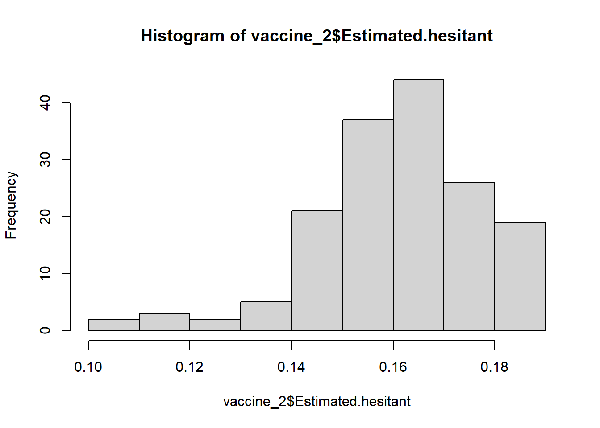
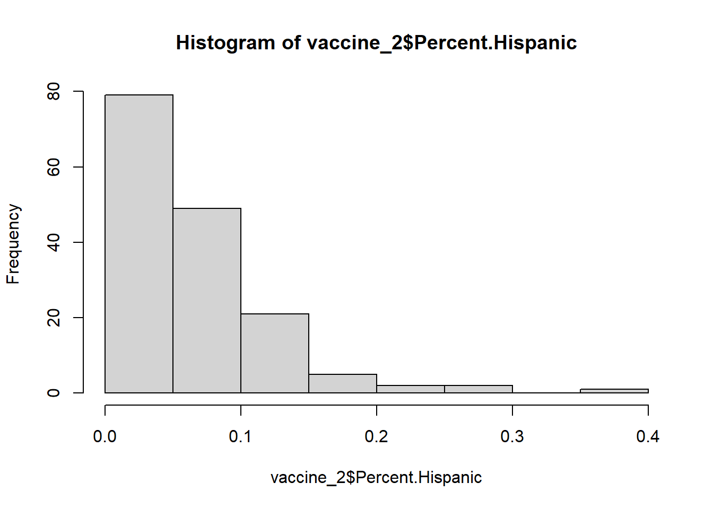
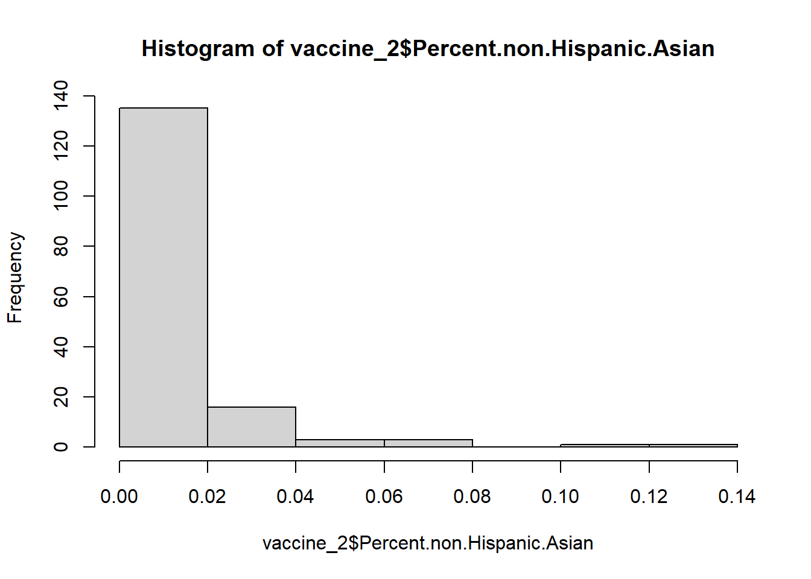
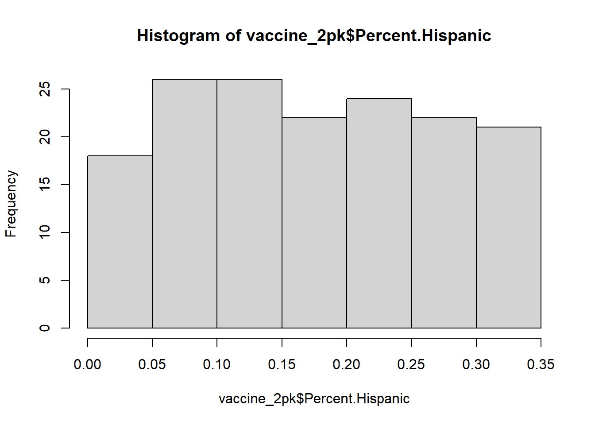
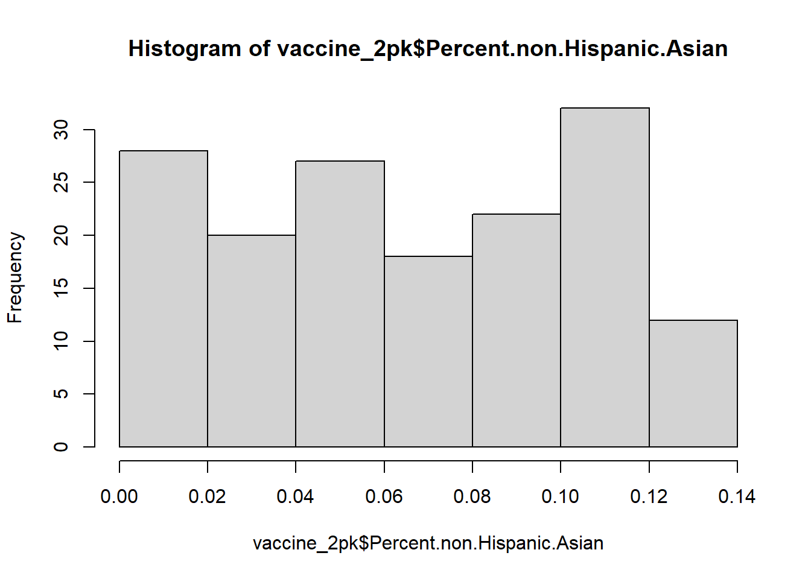

Vaccine Hesitancy for COVID-19: County and local estimates
The dataset of “Vaccine Hesitancy for COVID-19: County and local estimates” from https://data.cdc.gov/ was used for this exercise. This dataset contains estimates of percentage of adults who had vaccine hesitancy, Social Vulnerability Index, and percentages of different races for all US counties. Because the complete dataset is over 150MB, I queried and exported the data for only the counties in Georgia. Details of the data can be found here.
Load packages and data
#Load packages library("readr")library("here")
here() starts at /Users/sandi/MADA-course/chaohuali-MADA-portfolio
library("Hmisc")
Attaching package: 'Hmisc'
The following objects are masked from 'package:base':
format.pval, units
── Conflicts ────────────────────────────────────────── tidyverse_conflicts() ──
✖ dplyr::filter() masks stats::filter()
✖ dplyr::lag() masks stats::lag()
✖ dplyr::src() masks Hmisc::src()
✖ dplyr::summarize() masks Hmisc::summarize()
ℹ Use the conflicted package (<http://conflicted.r-lib.org/>) to force all conflicts to become errors
#create a new dataset that contains only the variables of interestvaccine_2 <- vaccine %>%mutate(SVI.Category=factor(SVI.Category) ) %>%mutate(CVAC.Level.Of.Concern=factor(CVAC.Level.Of.Concern) ) %>%select(FIPS.Code, Estimated.hesitant, Percent.Hispanic, Percent.non.Hispanic.Black, Percent.non.Hispanic.Asian, SVI.Category , CVAC.Level.Of.Concern)
Now, we have created a new dataset which includes only the variables of interest.
FIPS.Code: id for counties
Estimated.hesitant: Estimate of percentage of adults who describe themselves as “probably not” or “definitely not” going to get a COVID-19 vaccine once one is available to them, based on national survey data
Percent.Hispanic: Percent of county population that is Hispanic
Percent.non.Hispanic.Black: Percent of county population that is non-Hispanic Black
Percent.non.Hispanic.Asian: Percent of county population that is non-Hispanic Asian
SVI.Category: SVI categorized as follows: Very Low (0.0-0.19), Low (0.20-0.39); Moderate (0.40-0.59); High (0.60-0.79); Very High (0.80-1.0)
CVAC.Level.Of.Concern: CVAC categorized as follows: Very Low (0.0-0.19), Low (0.20-0.39); Moderate (0.40-0.59); High (0.60-0.79); Very High (0.80-1.0)
Explore and process data
#inspect the summaries of the variablesdescribe(vaccine_2)
vaccine_2
7 Variables 159 Observations
--------------------------------------------------------------------------------
FIPS.Code
n missing distinct Info Mean Gmd .05 .10
159 0 159 1 13161 108 13017 13033
.25 .50 .75 .90 .95
13082 13161 13242 13289 13305
lowest : 13001 13003 13005 13007 13009, highest: 13313 13315 13317 13319 13321
--------------------------------------------------------------------------------
Estimated.hesitant
n missing distinct Info Mean Gmd .05 .10
159 0 48 0.998 0.1618 0.01807 0.1363 0.1469
.25 .50 .75 .90 .95
0.1526 0.1623 0.1728 0.1864 0.1880
lowest : 0.1049 0.1085 0.1136 0.1178 0.1195, highest: 0.1747 0.1767 0.1784 0.1864 0.188
--------------------------------------------------------------------------------
Percent.Hispanic
n missing distinct Info Mean Gmd .05 .10
159 0 152 1 0.06489 0.05317 0.00803 0.01796
.25 .50 .75 .90 .95
0.03040 0.05050 0.08090 0.11848 0.15842
lowest : 0.0014 0.0028 0.0037 0.0043 0.0047, highest: 0.2117 0.2488 0.2728 0.2839 0.3511
--------------------------------------------------------------------------------
Percent.non.Hispanic.Black
n missing distinct Info Mean Gmd .05 .10
159 0 158 1 0.2824 0.2014 0.01441 0.03316
.25 .50 .75 .90 .95
0.14530 0.27760 0.39820 0.52726 0.60390
lowest : 0.0025 0.0041 0.0065 0.0074 0.0103, highest: 0.6239 0.624 0.6833 0.6939 0.7313
--------------------------------------------------------------------------------
Percent.non.Hispanic.Asian
n missing distinct Info Mean Gmd .05 .10
159 0 113 0.999 0.01258 0.01464 0.00000 0.00060
.25 .50 .75 .90 .95
0.00325 0.00760 0.01355 0.03076 0.03923
lowest : 0 1e-04 2e-04 7e-04 0.0013, highest: 0.0604 0.0703 0.0734 0.116 0.1291
--------------------------------------------------------------------------------
SVI.Category
n missing distinct
159 0 5
High Vulnerability (31, 0.195), Low Vulnerability (15, 0.094), Moderate
Vulnerability (21, 0.132), Very High Vulnerability (82, 0.516), Very Low
Vulnerability (10, 0.063)
--------------------------------------------------------------------------------
CVAC.Level.Of.Concern
n missing distinct
159 0 5
Value High Concern Low Concern Moderate Concern
Frequency 50 4 27
Proportion 0.314 0.025 0.170
Value Very High Concern Very Low Concern
Frequency 77 1
Proportion 0.484 0.006
--------------------------------------------------------------------------------
From the results above, none of the variables have missing entries or unreasonable outliers. But we need to collapse some of the groups that have very small numbers for the two categorical variables.
#collapse small groups for SVI.Category and CVAC.Level.Of.Concern vaccine_2 <- vaccine_2 %>%mutate(SVI.Category =case_when( SVI.Category %in%c("Very Low Vulnerability", "Low Vulnerability") ~"Low/Very Low", # combine Low and Very Low TRUE~ SVI.Category )) %>%# leave other categories unchangedmutate(CVAC.Level.Of.Concern =case_when( CVAC.Level.Of.Concern %in%c("Very Low Concern", "Low Concern", "Moderate Concern") ~"Very Low/Low/Moderate", # combine Very Low, Low and ModerateTRUE~ CVAC.Level.Of.Concern # leave other categories unchanged ))#check if recoding workeddescribe(vaccine_2)
vaccine_2
7 Variables 159 Observations
--------------------------------------------------------------------------------
FIPS.Code
n missing distinct Info Mean Gmd .05 .10
159 0 159 1 13161 108 13017 13033
.25 .50 .75 .90 .95
13082 13161 13242 13289 13305
lowest : 13001 13003 13005 13007 13009, highest: 13313 13315 13317 13319 13321
--------------------------------------------------------------------------------
Estimated.hesitant
n missing distinct Info Mean Gmd .05 .10
159 0 48 0.998 0.1618 0.01807 0.1363 0.1469
.25 .50 .75 .90 .95
0.1526 0.1623 0.1728 0.1864 0.1880
lowest : 0.1049 0.1085 0.1136 0.1178 0.1195, highest: 0.1747 0.1767 0.1784 0.1864 0.188
--------------------------------------------------------------------------------
Percent.Hispanic
n missing distinct Info Mean Gmd .05 .10
159 0 152 1 0.06489 0.05317 0.00803 0.01796
.25 .50 .75 .90 .95
0.03040 0.05050 0.08090 0.11848 0.15842
lowest : 0.0014 0.0028 0.0037 0.0043 0.0047, highest: 0.2117 0.2488 0.2728 0.2839 0.3511
--------------------------------------------------------------------------------
Percent.non.Hispanic.Black
n missing distinct Info Mean Gmd .05 .10
159 0 158 1 0.2824 0.2014 0.01441 0.03316
.25 .50 .75 .90 .95
0.14530 0.27760 0.39820 0.52726 0.60390
lowest : 0.0025 0.0041 0.0065 0.0074 0.0103, highest: 0.6239 0.624 0.6833 0.6939 0.7313
--------------------------------------------------------------------------------
Percent.non.Hispanic.Asian
n missing distinct Info Mean Gmd .05 .10
159 0 113 0.999 0.01258 0.01464 0.00000 0.00060
.25 .50 .75 .90 .95
0.00325 0.00760 0.01355 0.03076 0.03923
lowest : 0 1e-04 2e-04 7e-04 0.0013, highest: 0.0604 0.0703 0.0734 0.116 0.1291
--------------------------------------------------------------------------------
SVI.Category
n missing distinct
159 0 4
Value High Vulnerability Low/Very Low
Frequency 31 25
Proportion 0.195 0.157
Value Moderate Vulnerability Very High Vulnerability
Frequency 21 82
Proportion 0.132 0.516
--------------------------------------------------------------------------------
CVAC.Level.Of.Concern
n missing distinct
159 0 3
Value High Concern Very High Concern Very Low/Low/Moderate
Frequency 50 77 32
Proportion 0.314 0.484 0.201
--------------------------------------------------------------------------------
Now, SVI.Category has 4 categories and CVAC.Level.Of.Concern has 3 categories. The dataset is ready for analysis.
Table and figures showing distribution of variables
#get descriptive statistics of variables and create a tableab<-gtsummary::tbl_summary(select(vaccine_2,-"FIPS.Code"), statistic =list(all_continuous() ~"{mean}/{sd}",all_categorical() ~"{n} / {N} ({p}%)"),)knitr::kable(ab,caption ="Summary Table: Mean/SD or n/N(%)")
Summary Table: Mean/SD or n/N(%)
Characteristic
N = 159
Estimated.hesitant
0.162/0.016
Percent.Hispanic
0.06/0.05
Percent.non.Hispanic.Black
0.28/0.18
Percent.non.Hispanic.Asian
0.013/0.018
SVI.Category
NA
High Vulnerability
31 / 159 (19%)
Low/Very Low
25 / 159 (16%)
Moderate Vulnerability
21 / 159 (13%)
Very High Vulnerability
82 / 159 (52%)
CVAC.Level.Of.Concern
NA
High Concern
50 / 159 (31%)
Very High Concern
77 / 159 (48%)
Very Low/Low/Moderate
32 / 159 (20%)
#Histograms of Estimated.hesitanthist(vaccine_2$Estimated.hesitant)

#Histograms of Percent.Hispanichist(vaccine_2$Percent.Hispanic)

#Histograms of Percent.non.Hispanic.Blackhist(vaccine_2$Percent.non.Hispanic.Black)
#Histograms of Percent.non.Hispanic.Asianhist(vaccine_2$Percent.non.Hispanic.Asian )

According to the histograms, we know none of the four continuous variables have normal distribution.
This section contributed by Patrick Kaggwa
#Looking at the columns of vaccine2 before creating a synthetic dataset colnames(vaccine_2)
After undertanding the description of the above dataframe, I used ChatGPT to create a new dataframe called vaccine_2pk with the same structure as vaccine_2.
ChatGPT prompt
Create a dataset that should consist of 159 observations and include the following variables: FIPS codes, Estimated hesitant values, Percent Hispanic values, Percent non-Hispanic Black values, Percent non-Hispanic Asian values, SVI Category, and CVAC Level of Concern. To ensure reproducibility, set the seed to 123 before generating random values. The FIPS codes should range from 13001 to 13159. The Estimated hesitant values should be uniformly distributed between 0.1049 and 0.188. Percent Hispanic values should range uniformly between 0.0014 and 0.3511. Percent non-Hispanic Black values should range uniformly between 0.0025 and 0.7313. Percent non-Hispanic Asian values should range uniformly between 0 and 0.1291. The SVI Category should be sampled with replacement from ‘High Vulnerability’, ‘Low/Very Low’, ‘Moderate Vulnerability’, and ‘Very High Vulnerability’, with probabilities of 31/159, 25/159, 21/159, and 82/159 respectively. Similarly, the CVAC Level of Concern should be sampled with replacement from ‘High Concern’, ‘Very High Concern’, and ‘Very Low/Low/Moderate’, with probabilities of 50/159, 77/159, and 32/159 respectively. Create a dataframe with these variables named ’vaccine_2pk.
# Set seed for reproducibilityset.seed(123)# Generate FIPS codesFIPS.Code <-seq(13001, 13159)# Generate Estimated hesitant valuesEstimated.hesitant <-runif(159, min =0.1049, max =0.188)# Generate Percent Hispanic valuesPercent.Hispanic <-runif(159, min =0.0014, max =0.3511)# Generate Percent non-Hispanic Black valuesPercent.non.Hispanic.Black <-runif(159, min =0.0025, max =0.7313)# Generate Percent non-Hispanic Asian valuesPercent.non.Hispanic.Asian <-runif(159, min =0, max =0.1291)# Generate SVI Category with exact distributionSVI.Category <-sample(c("High Vulnerability", "Low/Very Low", "Moderate Vulnerability", "Very High Vulnerability"),159, replace =TRUE, prob =c(31/159, 25/159, 21/159, 82/159))# Generate CVAC Level of ConcernCVAC.Level.Of.Concern <-sample(c("High Concern", "Very High Concern", "Very Low/Low/Moderate"),159, replace =TRUE, prob =c(50/159, 77/159, 32/159))# Create the dataframevaccine_2pk <-data.frame(FIPS.Code = FIPS.Code,Estimated.hesitant = Estimated.hesitant,Percent.Hispanic = Percent.Hispanic,Percent.non.Hispanic.Black = Percent.non.Hispanic.Black,Percent.non.Hispanic.Asian = Percent.non.Hispanic.Asian,SVI.Category = SVI.Category,CVAC.Level.Of.Concern = CVAC.Level.Of.Concern)# Print summary statistics for each variablesummary(vaccine_2pk)
FIPS.Code Estimated.hesitant Percent.Hispanic
Min. :13001 Min. :0.1050 Min. :0.003603
1st Qu.:13040 1st Qu.:0.1253 1st Qu.:0.094079
Median :13080 Median :0.1437 Median :0.169970
Mean :13080 Mean :0.1464 Mean :0.174977
3rd Qu.:13120 3rd Qu.:0.1668 3rd Qu.:0.255824
Max. :13159 Max. :0.1875 Max. :0.346079
Percent.non.Hispanic.Black Percent.non.Hispanic.Asian SVI.Category
Min. :0.01545 Min. :6.008e-05 Length:159
1st Qu.:0.17746 1st Qu.:3.539e-02 Class :character
Median :0.33418 Median :6.698e-02 Mode :character
Mean :0.36120 Mean :6.590e-02
3rd Qu.:0.53799 3rd Qu.:1.034e-01
Max. :0.73087 Max. :1.282e-01
CVAC.Level.Of.Concern
Length:159
Class :character
Mode :character
# I will desecribe the dadescribe(vaccine_2pk)
vaccine_2pk
7 Variables 159 Observations
--------------------------------------------------------------------------------
FIPS.Code
n missing distinct Info Mean Gmd .05 .10
159 0 159 1 13080 53.33 13009 13017
.25 .50 .75 .90 .95
13040 13080 13120 13143 13151
lowest : 13001 13002 13003 13004 13005, highest: 13155 13156 13157 13158 13159
--------------------------------------------------------------------------------
Estimated.hesitant
n missing distinct Info Mean Gmd .05 .10
159 0 159 1 0.1464 0.0273 0.1123 0.1154
.25 .50 .75 .90 .95
0.1253 0.1437 0.1668 0.1791 0.1842
lowest : 0.104952 0.10577 0.106945 0.108395 0.108686
highest: 0.184927 0.186323 0.186689 0.18675 0.187524
--------------------------------------------------------------------------------
Percent.Hispanic
n missing distinct Info Mean Gmd .05 .10
159 0 159 1 0.175 0.1124 0.02158 0.03743
.25 .50 .75 .90 .95
0.09408 0.16997 0.25582 0.30924 0.32963
lowest : 0.00360338 0.00427297 0.00469764 0.0084025 0.018068
highest: 0.339699 0.340384 0.341265 0.344854 0.346079
--------------------------------------------------------------------------------
Percent.non.Hispanic.Black
n missing distinct Info Mean Gmd .05 .10
159 0 159 1 0.3612 0.2407 0.07465 0.10029
.25 .50 .75 .90 .95
0.17746 0.33418 0.53799 0.66356 0.71305
lowest : 0.0154477 0.022901 0.0270808 0.0279168 0.0449102
highest: 0.721063 0.721136 0.724913 0.728835 0.730866
--------------------------------------------------------------------------------
Percent.non.Hispanic.Asian
n missing distinct Info Mean Gmd .05 .10
159 0 159 1 0.0659 0.04522 0.005402 0.010479
.25 .50 .75 .90 .95
0.035393 0.066978 0.103433 0.115688 0.122780
lowest : 6.00766e-05 0.00208632 0.0023708 0.00283939 0.0032955
highest: 0.12618 0.126415 0.12769 0.128189 0.128202
--------------------------------------------------------------------------------
SVI.Category
n missing distinct
159 0 4
Value High Vulnerability Low/Very Low
Frequency 32 30
Proportion 0.201 0.189
Value Moderate Vulnerability Very High Vulnerability
Frequency 18 79
Proportion 0.113 0.497
--------------------------------------------------------------------------------
CVAC.Level.Of.Concern
n missing distinct
159 0 3
Value High Concern Very High Concern Very Low/Low/Moderate
Frequency 57 75 27
Proportion 0.358 0.472 0.170
--------------------------------------------------------------------------------
#get descriptive statistics of variables and create a tableab<-gtsummary::tbl_summary(select(vaccine_2pk,-"FIPS.Code"), statistic =list(all_continuous() ~"{mean}/{sd}",all_categorical() ~"{n} / {N} ({p}%)"),)knitr::kable(ab,caption ="Summary Table: Mean/SD or n/N(%)")
Summary Table: Mean/SD or n/N(%)
Characteristic
N = 159
Estimated.hesitant
0.146/0.024
Percent.Hispanic
0.17/0.10
Percent.non.Hispanic.Black
0.36/0.21
Percent.non.Hispanic.Asian
0.07/0.04
SVI.Category
NA
High Vulnerability
32 / 159 (20%)
Low/Very Low
30 / 159 (19%)
Moderate Vulnerability
18 / 159 (11%)
Very High Vulnerability
79 / 159 (50%)
CVAC.Level.Of.Concern
NA
High Concern
57 / 159 (36%)
Very High Concern
75 / 159 (47%)
Very Low/Low/Moderate
27 / 159 (17%)
#Histograms of Estimated.hesitanthist(vaccine_2pk$Estimated.hesitant)
#Histograms of Percent.Hispanichist(vaccine_2pk$Percent.Hispanic)

#Histograms of Percent.non.Hispanic.Blackhist(vaccine_2pk$Percent.non.Hispanic.Black)
#Histograms of Percent.non.Hispanic.Asianhist(vaccine_2pk$Percent.non.Hispanic.Asian )

The histograms show less skewed but at the same time they are not normally distributed. This is consistent with the histograms using dataframe vaccine_2